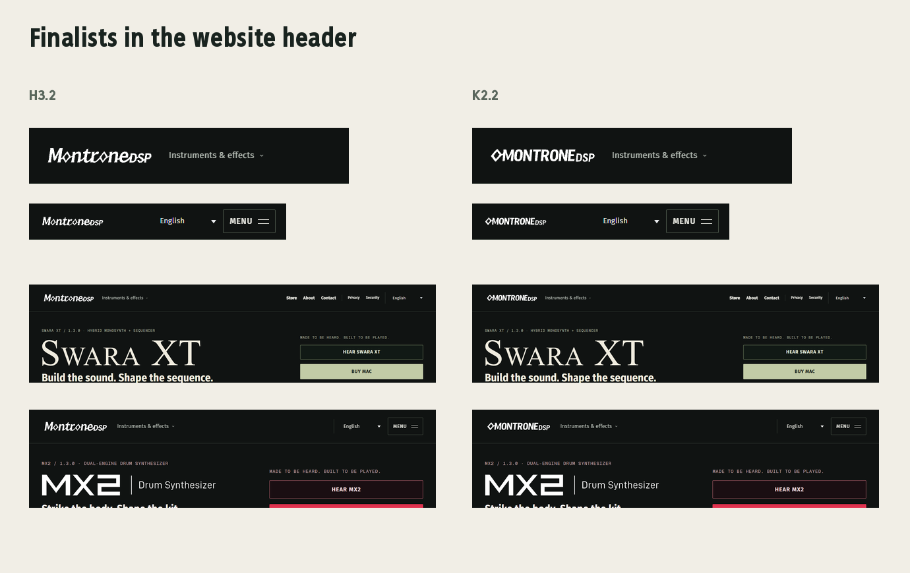
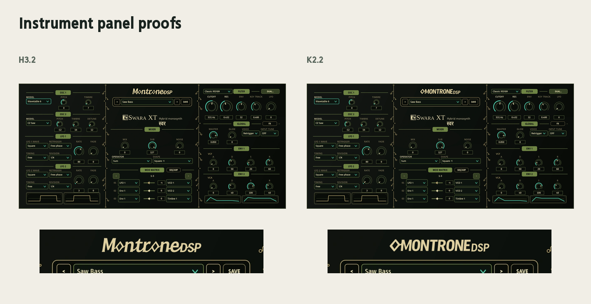
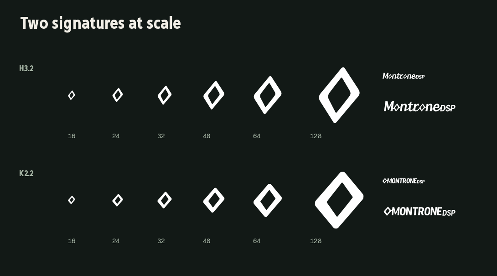
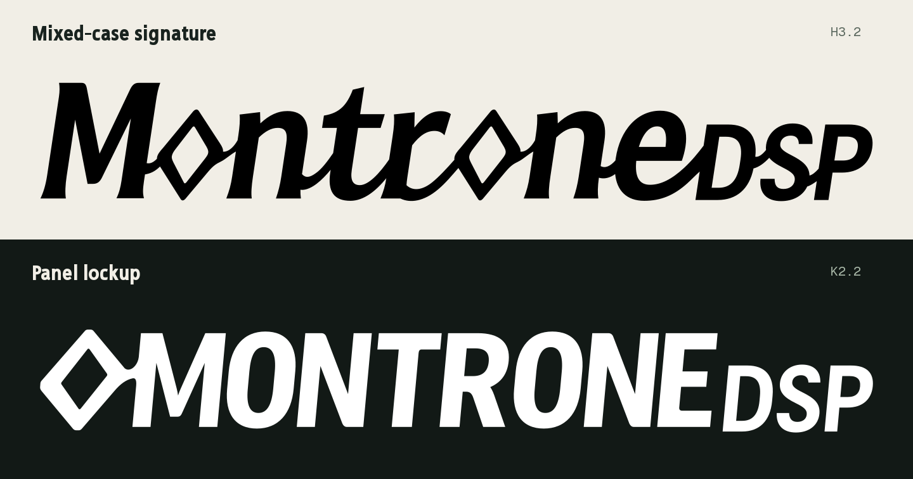
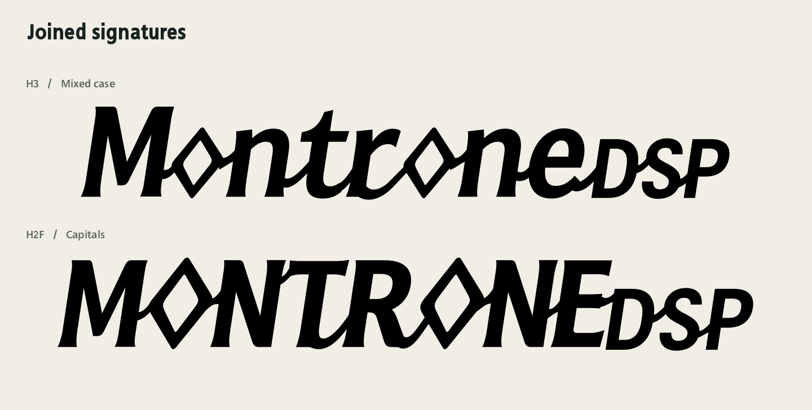
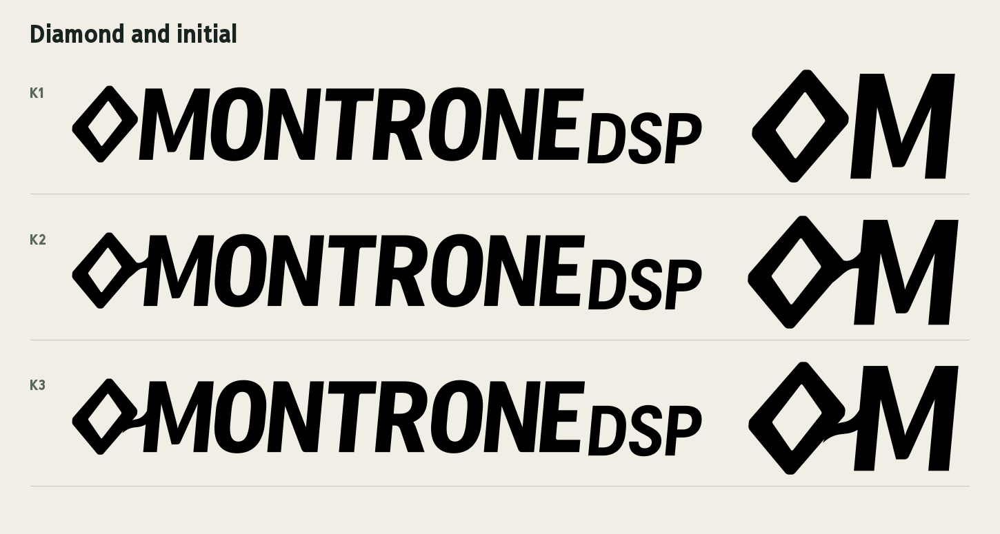
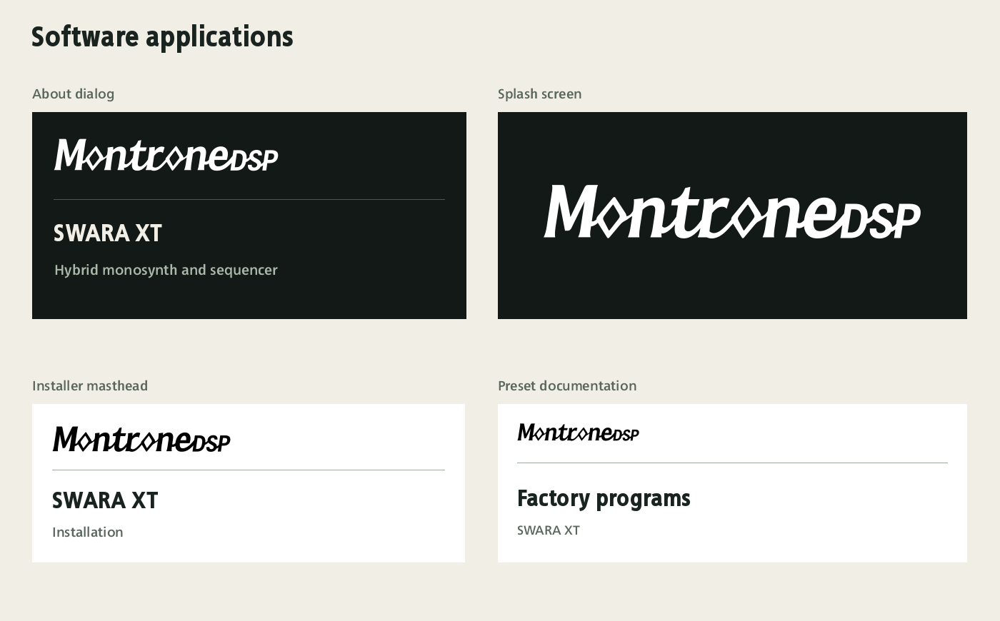
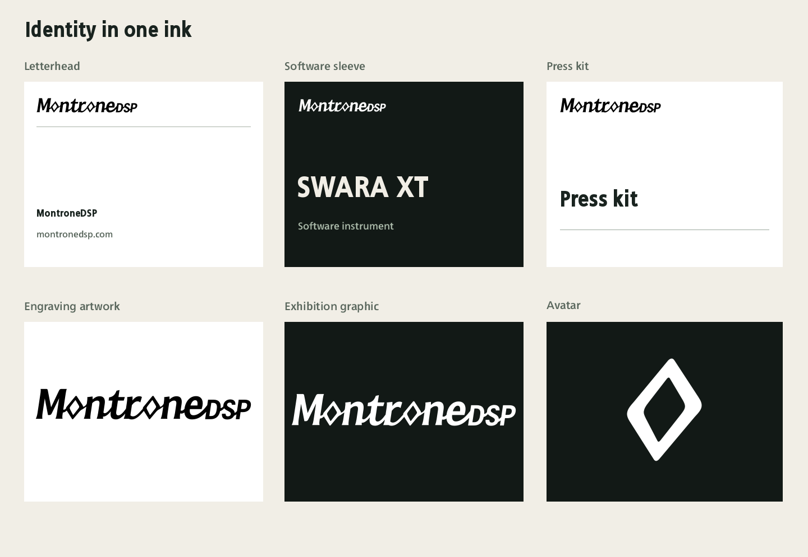
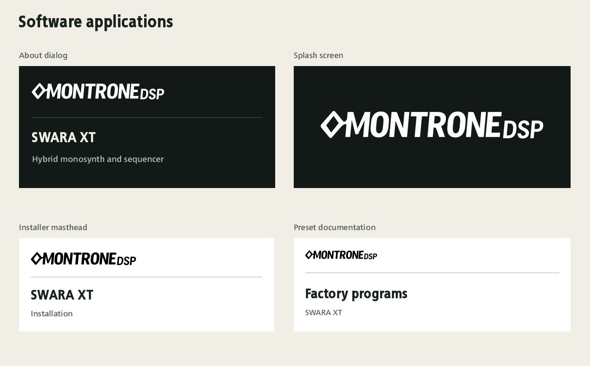
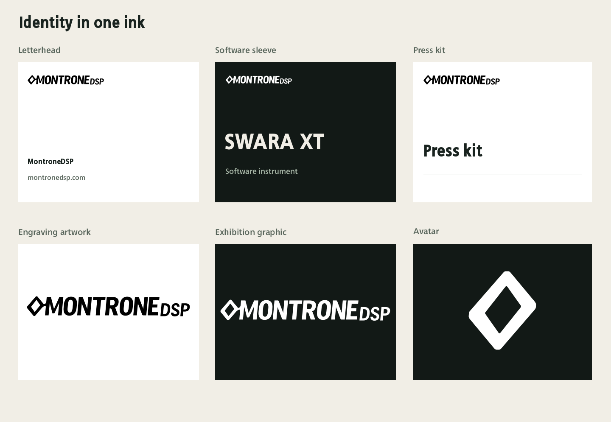

H3.2
Mixed-case signature
Both diamond o’s sit at lowercase height. The t and e carry their exits directly into the following letter.
lockup-black.svgTwo drawings for review. H3.2 threads the diamond through the name. K2.2 carries it into the first stroke of the M.
Both diamond o’s sit at lowercase height. The t and e carry their exits directly into the following letter.
06-delivery/H3.2/lockup-black.svgThe diamond leads into the M. Its wider aperture relieves the heavier joined corner.
06-delivery/K2.2/lockup-black.svg









Both diamond o’s sit at lowercase height. The t and e carry their exits directly into the following letter.
lockup-black.svgThe diamond leads into the M. Its wider aperture relieves the heavier joined corner.
lockup-black.svgClipped tips and one uninterrupted ring. First scale and spacing trial.
lockup-black.svgA broader frame and two interior shoulders. First scale and spacing trial.
lockup-black.svgTwo bridges separated at the waist. First scale and spacing trial.
lockup-black.svgRounded opposing shoulders. This was the upright emblem before the movement studies.
lockup-black.svgThe direction used in the first instrument, installer and print proofs.
lockup-black.svgLowercase rhythm with a full-height M, rising t and two diamond o’s.
lockup-black.svg